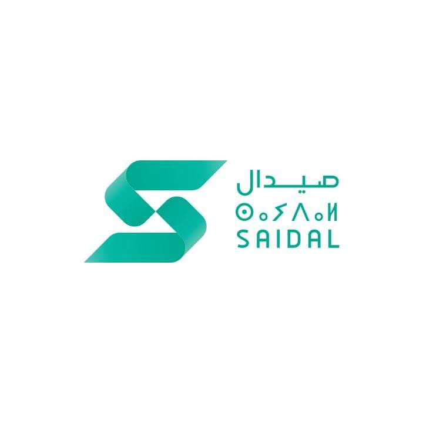

Expériences Professionnelles
Robotique Collaborative & Industrie 4.0
Centre de Développement des Technologies Avancées (CDTA)Sept. - Oct. 2024
- Implémentation d'un algorithme d'apprentissage par renforcement pour optimiser les trajectoires du robot
- Développement d'une interface Java et intégration avec KUKA Sunrise.Workbench
- Réduction des temps de cycle grâce à l'optimisation des séquences de tâches
Q-Learning
Java/NetBeans
KUKA Sunrise
Programmation d'automates et IHM
Schneider ElectricAvr. - Mai 2024
- Programmation d'automates Modicon M221/M340 avec EcoStruxure Machine Expert
- Développement d'IHM avec Vijeo Designer pour la supervision de processus industriels
- Conception de systèmes automatisés en FBD/Ladder sous Unity Pro XL
- Gestion de projets complets : de la configuration matérielle à la mise en service
EcoStruxure
Unity Pro XL
Vijeo Designer
Automates

Stage de découverte en production pharmaceutique
Groupe SAIDALDéc. 2023 - Janv. 2024
- Analyse des processus automatisés de production et conditionnement de médicaments
- Observation des systèmes robotisés (Pick & Place) pour le conditionnement primaire/secondaire
- Découverte des chaines de production de formes sèches (comprimés, gélules)
Procédés pharmaceutiques
Automatisation industrielle
Contrôle qualité
Stage de découverte en fabrication électronique
Bomare CompanyMars - Avr. 2023
- Observation des chaines de production SMT (Surface Mount Technology) et DIP pour cartes mères
- Découverte des processus de contrôle qualité (SPI, AOI, tests fonctionnels)
- Initiation aux systèmes automatisés : machines Pick & Place, fours de refusion
- Familiarisation avec les normes ISO 9001 en environnement industriel
Électronique Industrielle
Contrôle Qualité
Automatisation Industrielle
Siemens SPADéc. 2022 - Janv. 2023
- Programmation d'automates SIMATIC S7-300 avec le logiciel STEP 7
- Développement de fonctions de commande (FC15, FC16) pour bandes transporteuses
- Configuration matérielle et mise en service de systèmes automatisés
- Maîtrise des langages de programmation LAD, FBD et STL
SIMATIC S7-300
STEP 7
Automates Programmables